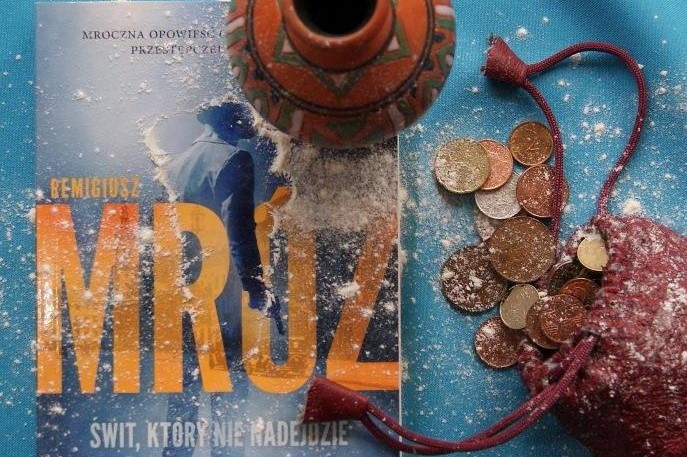

Świt, który nigdy nie nadejdzie
Akcja toczy się w przedwojennej Warszawie. Głównym bohaterem jest Ernest Wilmański, były pięściarz, jednak człowiek bez przeszłości. W stolicy szuka nowego życia, zaczął rozglądać się za pracą, jednak to ona go znalazła. Tylko nie do końca uczciwa. Zostaje wciągnięty w świat Banników - grupy przestępczej - do których metod zaliczamy topienie przeciwników w baniach.
Powrót do serii Zobacz inne książki!
